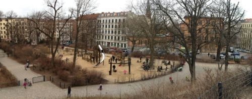

Sat, 10 Mar 2012 11:12:00 · Berlin · berlinschool · Germany · Study · Twitter · EMBA · Adventure
Hello from Berlin ^_^

For those who’s been wondering on the frequency of Berlin-related post flooding your tweeter stream, well get ready to see more of them as will be plenty more where it came from. But here’s the gist of it…
I will be spending the next few weeks in Deutschland to start an EMBA programme at Berlin School of Creative Leadership, from which I’m fortunate enough to be granted a scholarship. It was all a last minute decision on my part. Knowing almost nothing about the school save from my Twitter stream (Thank you, @Twitter), I decided to apply for both the school and the scholarship with only three days left to the deadline. I literally had less than 12 hours to write 3 long essays for the application. By dawn I was almost defeated and was ready to raise a white flag. I guess it was sheer stubbornness on my part that kept me going. I’m incredibly humbled and grateful for this fantastic opportunity and cannot wait to meet all those brilliant people in my class.
So stay tuned for more shenanigans coming from Prenzlauer Berg…!